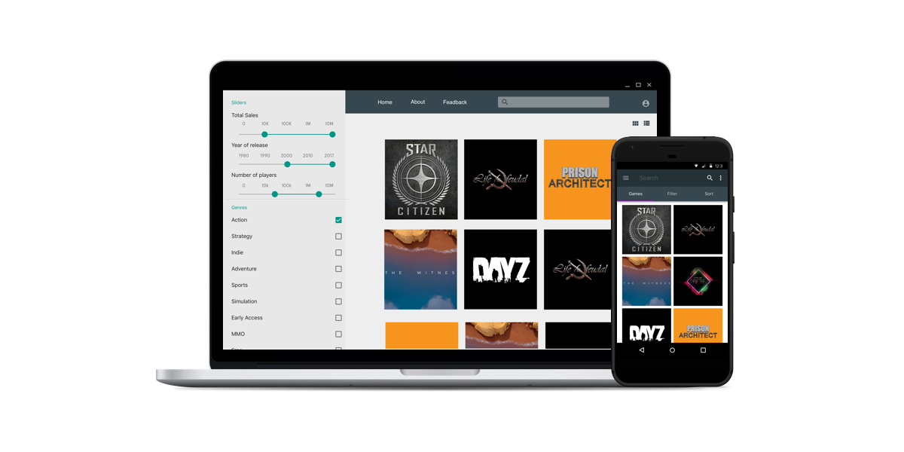
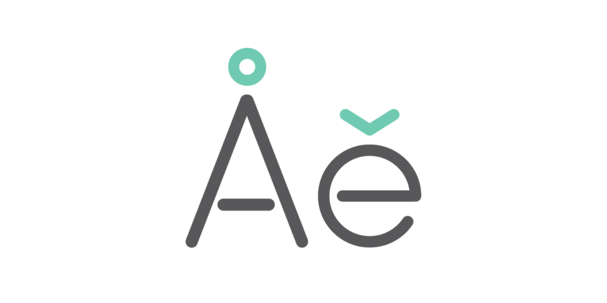

resume
linkedIn
email






Hi there!
My name is Kate Von Houck and I'm a UX designer. I recently graduate from Academy of Art University in San Francisco and my major was Web design & New Media. I like doing research and creating user oriented websites and mobile apps. I became very passionate about user orientted design, user testings and research.
CONTACT ME
BLUEPRINT
UX/UI DESIGN
GROUCHY
UX/UI DESIGN
STEAM SPY
UX/UI DESIGN
TODO APP
UX/UI DESIGN
PRO DANCE
UX/UI DESIGN
BUBBLEATS
IOT PROJECT
BREAKPOINT
TYPE DESIGN